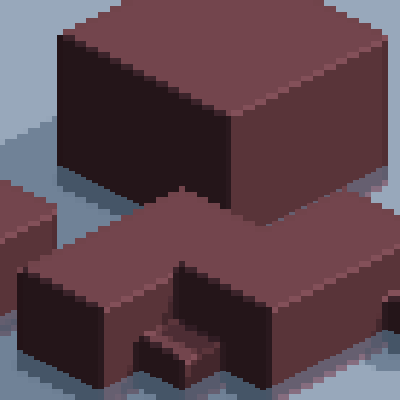
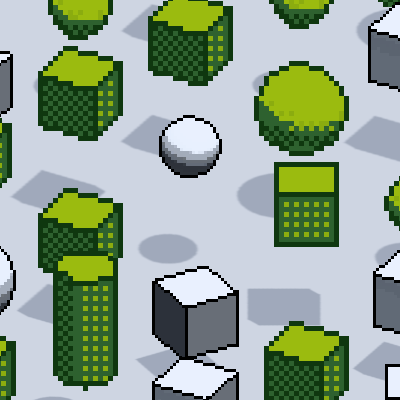
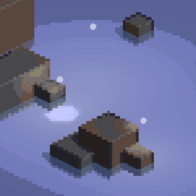

ProPixelizer comes with a number of example scenes to showcase features and show you how to use the package, which can be imported into your project via Unity's Package Manager.
From Packages: in project, select the ProPixelizer package, click Samples tab and then press 'import'.

Each example scene also contains a 'readme' in the scene heirachy, which you can inspect to find out more information or further suggestions. The examples are described below.
Simple

A simple scene showing a few different ProPixelizer materials. If you see this scene correctly, you've successfully installed ProPixelizer!
Edges and Outlines

Shows off the different edge and outline options in ProPixelizer.
World Space Pixel Size
A scene that configures a camera to use pixel sizes defined in world-space units. ProPixelizer automatically handles render target scaling and sub-pixel camera movement for you to smoothly maintan the desired pixel size across different camera ortho-sizes and screen resolutions.
No Creep
An example demonstrating how to use ProPixelizer to eliminate creep from moving objects.
Color Palettes

A scene that randomly changes material settings to show off a wide range of color palette and dither pattern styles. ProPixelizer contains tools for creating your own dither patterns and palettes.
Pixel Alignment
Shows you how to restrict sub-pixel relative motion between different objects - useful for aligning inventory items with characters, for example.
Camera Stacking

An example scene where ProPixelizer is applied to different cameras in a URP camera stack.
Multiple Lights
Demonstrates the use of additional lights in a scene. Note: you may need to enable additional lights and shadows in your Render Pipeline Asset.